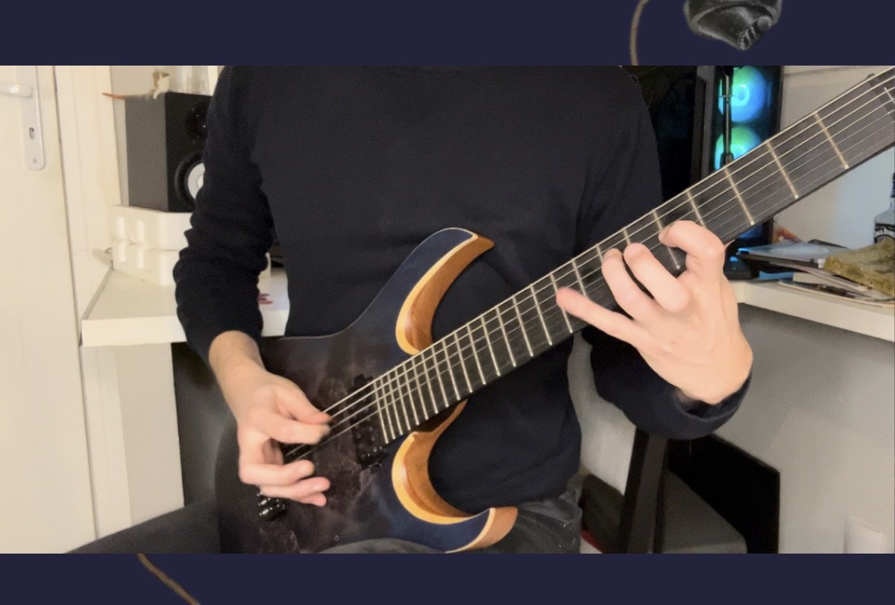

Publié le : 19 avril 2025
Week-end de Pâques… Certains cherchent des œufs. D’autres, comme moi, chassent quelque chose de plus rare : l’attention.
Dans un monde saturé de contenus, être visible ne suffit plus. Une marque qui veut vraiment marquer doit aller plus loin que le visuel.
Elle doit être entendue.
Le branding sonore, c’est cette capacité à transmettre une émotion, une ambiance, une identité en seulement deux secondes.
C’est là que la magie opère : on ne lit plus la marque, on la ressent.
Sur l’image ci-dessus, une session ouverte dans Cubase — mon laboratoire sonore.
Je compose, j’expérimente, je sculpte un univers sonore fidèle à l’ADN du client.
Et parfois, je prends la guitare, tout simplement. Car derrière le branding, il y a aussi un geste artistique, une sensibilité qui ne s’encode pas dans un brief.
Chez Éloquence Créative, je ne sépare pas la forme du fond. J’allie rédaction stratégique, vision marketing et création sonore pour construire des identités qui parlent autant qu’elles vibrent.
Parce que les marques qui s’imposent aujourd’hui sont celles qu’on n’oublie pas.
J’accompagne les entreprises qui veulent créer une expérience sonore forte, différenciante et alignée avec leur image.
📧 Écrivez-moi : guilhem@eloquencecreative.fr
📞 Ou prenons rendez-vous : calendly.com/guilhem-eloquencecreative